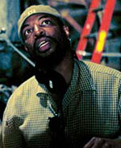
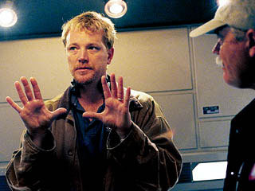
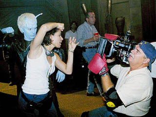

|
Captulo
4 - Encontrando
sua voz
A procura pelo tom da nova srie de Jornada
nas Estrelas
A
preocupao que pautou os primeiros episdios de Enterprise
foi sem dvida a de tentar ao mximo reforar a noo de que a
audincia estava recebendo uma srie diferente de Jornada nas
Estrelas. Mais do que apresentar enredos inovadores, a idia
era mostrar que histrias semelhantes receberiam um tratamento
diferenciado.
Para atingir esse objetivo, Rick Berman e Brannon Braga decidiram
que era preciso promover uma forte renovao da equipe de roteiristas,
com relao aos que trabalhavam em Voyager. Da velha safra
s sobreviveram Andre Bormanis e a dupla Michael Sussman e Phyllis
Strong. Os demais seriam todos contratados especialmente para
a srie.
No novo pacote, teve um pouco de tudo. Foram trazidos a bordo
desde veteranos da fico cientfica, como Fred Dekker (responsvel
pela roteirizao do filme "Robocop 3" e de alguns episdios de
"Tales from the Crypt"), at totais novidades no gnero, como
Antoinette Stella (que tinha um histrico de carreira em sries
dramticas como "Providence" e "Melrose Place").
Tambm foram trazidos a dupla Andr e Maria Jacquemetton (um casal
que j havia escrevido roteiros para sries to dspares quanto
"Highlander", "Baywatch" e "Jack of All Trades"), o novato Tim
Finch (que s tinha a srie "Seven Days" em seu currculo), e
o veterano Chris Black (que j havia roteirizado episdios de
vrias sries de fico e fantasia, como "Cleopatra 2525", "Xena",
"Sliders" e "Weird Science"). Stephen Beck, que j trabalhava
numa srie de fico da UPN, fechou a equipe para o primeiro ano.
Se por um lado os produtores decidiram trazer sangue novo produo
dos roteiros da srie, por outro eles fecharam a principal porta
para a revelao de novos talentos, encerrando uma prtica iniciada
por Michael Piller nos bons e velhos tempos de A Nova Gerao:
a poltica de submisso de roteiros. uma poltica normal da
indstria do entretenimento americana aceitar roteiros especulativos
enviados por qualquer escritor que esteja inscrito no sindicato.
Mas, desde 1989, Jornada nas Estrelas abriu suas portas
tambm a todo aquele que quisesse escrever um roteiro, mesmo no
sendo um escritor profissionais. Excelentes profissionais foram
revelados desta forma, como Ronald Moore, que por muito tempo
foi parceiro de Brannon Braga em A Nova Gerao (a dupla
escreveu os dois primeiros filmes de Picard e cia. para o cinema,
alm do episdio final da srie para TV) e que teve importncia
fundamental na evoluo de Deep Space Nine.
Para Enterprise, entretanto, Berman decidiu vetar o recebimento
de roteiros de escritores sem credenciais. Ele explica: "H uma
srie de questes legais envolvidas. uma poltica que existe
em muito poucas sries de televiso. algo que Michael Piller
iniciou alguns anos atrs e que ficou muito pesado para nos. Pessoas
precisam ser contratadas para analisar centenas de roteiros. Documentos
legais precisam ser mandados para l e para c. Era um trabalho
enorme e ficou muito caro. As pessoas que estavam coordenando
as equipes de roteiristas ao longo dos anos descobriram que no
valia a pena o esforo a longo prazo."
Limitados aos roteiristas contratados, Berman & Braga precisaram
explicar em detalhes o que era esperado de um episdio da nova
srie. Embora vrios deles tivessem experincia prvia com o gnero
sci-fi, nenhum havia sequer pensado em escrever episdios de Jornada
nas Estrelas antes. Cabia portanto dupla de produtores-executivos
oferecer uma linha firme e clara de orientao para a srie.
 "Rick
e Brannon claramente moldaram e guiaram essa srie desde o incio
e so responsveis pela maioria das histrias que fizemos", contou
Andr Bormanis
ao Trek Brasilis. "Mas a equipe de roteiristas tem uma
grande dose de responsabilidade no desenvolvimento das histrias
e na evoluo de nossos personagens, e claro que a equipe
responsvel pela roteirizao da maioria das histrias que filmamos." "Rick
e Brannon claramente moldaram e guiaram essa srie desde o incio
e so responsveis pela maioria das histrias que fizemos", contou
Andr Bormanis
ao Trek Brasilis. "Mas a equipe de roteiristas tem uma
grande dose de responsabilidade no desenvolvimento das histrias
e na evoluo de nossos personagens, e claro que a equipe
responsvel pela roteirizao da maioria das histrias que filmamos."
 Claramente,
foi exatamente essa a diviso de tarefas que imperou durante a
primeira temporada. Dos 26 episdios produzidos, 19 foram, ao
menos em termos da histria bsica, concebidos pela dupla Berman
& Braga. Desses, seis foram tambm roteirizados pelos dois. Nem
o criador Gene Roddenberry havia tomado tanto as rdeas da srie
original tanto quanto os dois fizeram em Enterprise. Um
dado curioso que Rick Berman e Brannon Braga se tornaram uma
espcie de instituio dentro da srie -- em tudo que apareciam,
estavam juntos.
Num estilo de parceria similar ao que vimos com John Lennon e
Paul McCartney nos Beatles, todos os produtos criativos de um
ou de outro levariam o nome da dupla, independentemente de quem
tenha sido o efetivo realizador/idealizador do trabalho. Claramente,
foi exatamente essa a diviso de tarefas que imperou durante a
primeira temporada. Dos 26 episdios produzidos, 19 foram, ao
menos em termos da histria bsica, concebidos pela dupla Berman
& Braga. Desses, seis foram tambm roteirizados pelos dois. Nem
o criador Gene Roddenberry havia tomado tanto as rdeas da srie
original tanto quanto os dois fizeram em Enterprise. Um
dado curioso que Rick Berman e Brannon Braga se tornaram uma
espcie de instituio dentro da srie -- em tudo que apareciam,
estavam juntos.
Num estilo de parceria similar ao que vimos com John Lennon e
Paul McCartney nos Beatles, todos os produtos criativos de um
ou de outro levariam o nome da dupla, independentemente de quem
tenha sido o efetivo realizador/idealizador do trabalho.
Apesar disso, fato que Berman nunca esteve to vinculado ao
lado criativo de uma srie de Jornada nas Estrelas quanto
em Enterprise. "Eu estou muito mais envolvido na roteirizao
agora", disse, na poca da estria da srie. "Brannon e eu escrevemos
o piloto, e ns escrevemos o primeiro e o terceiro episdios regulares,
e estamos descobrindo que nos divertimos muito trabalhando juntos.
Muito mesmo."
Mudanas de foco
Juntos, os dois decidiram usar os primeiros episdios para mostrar
as diferenas entre esta nova tripulao e a das sries anteriores.
A comear pela espinha dorsal, o capito Jonathan Archer. Antes
da estria da srie, Scott Bakula deu algumas pistas de por onde
seu personagem iria caminhar. "Ele um timo capito, eu acho.
Mas ele vai cometer alguns erros. Ele muito humano."
De fato, logo nos primeiros episdios Archer obrigado a confrontar
o fato de que a vida no ser fcil no espao e acaba se vendo
pressionado a tomar decises difceis. Alguns fs viram a postura
do capito como uma fraqueza inerente ao personagem, um defeito
da srie, mas Brannon Braga revelou que o trao de personalidade
foi introduzido de forma totalmente intencional.
"Essa [indeciso] era planejada", disse Braga ao final do primeiro
ano. "Queramos um capito que estivesse animado para sair l
fora e explorar, e ento percebesse que a galxia no bem o
que ele esperava. Ele no Kirk. Kirk teve o benefcio de uma
Federao, de uma Frota Estelar de naves e da Primeira Diretriz.
Archer est por conta prpria. Voc poderia dizer que ele indeciso,
mas para mim essa parte da diverso. Queremos v-lo frustrado.
Gradualmente ele comea a ganhar suas 'pernas espaciais'. Mas
isso algo que voc quer que seja mostrado, porque bom drama
de personagem."
Os produtores tambm queriam que a srie fosse mais engraada,
e ao mesmo tempo mais natural, que suas predecessoras. "Queramos
que Enterprise fossem em geral mais engraada", diz Braga.
"Queramos que o humor viesse organicamente. Muitas vezes em Voyager
o humor era feito como, 'E aqui est o episdio engraado'. Mesmo
quando tentvamos humor em episdios normais, parecia meio forado.
Com essa srie, esperamos, as pessoas vo olhar e dizer, 'Enterprise
--aquela era a engraada. Voyager e A Nova Gerao podem
ter mais gravidade semana aps semana, mas rapaz, Enterprise
era um estouro'."
Outro grande tema do primeiro ano foi a deficincia tecnolgica
da vida no sculo 22, quando comparada s outras sries. Para
Braga, foi uma bno. "Est brincando comigo?", Braga pergunta
retoricamente. "Em A Nova Gerao e Voyager, voc
mal podia fazer qualquer coisa porque as naves eram to avanadas.
Tomamos uma deciso consciente aqui de fazer menos tecnobaboseira,
resolver histrias com solues de personagens. O que me preocupa
que no queremos ter tudo inventado muito depressa."
Apesar dessa preocupao, a primeira temporada j oferecia novidades
tecnolgicas importantes, como as pistolas de fase (precursoras
dos feisers), os canhes de fase e os primeiros campos de fora
eletromagnticos, precursores dos escudos.
procura de enredos originais
Do ponto de vista dos enredos, a idia tambm foi priorizar histrias
que tivessem um enfoque na premissa bsica da srie, de ser uma
precursora de tudo que j foi produzido sobre Jornada nas Estrelas.
Entre esses episdios vale a pena relembrar "Terra
Nova" e "Fortunate
Son", que apresentaram respectivamente o primeiro esforo
de colonizao interestelar promovido pelo planeta e a vida cotidiana
a bordo de lentos cargueiros terrestres que viajam a velocidades
prximas de dobra 1.
 "Terra
Nova" tambm marcou um trao marcante da nova srie -- a escalao
de atores provenientes das produes anteriores de Jornada
como diretores dos episdios. Nesse primeiro esforo, LeVar Burton
(Geordi La Forge) foi escalado. No episdio seguinte, "The
Andorian Incident", foi a vez de Roxann Dawson (B'Ellana
Torres). Ainda teriam a chance de ocupar a cadeira de diretor
nesta temporada Robert Duncan McNeill (Tom Paris) e Michael Dorn
(Worf).

"Gente como LeVar e Roxann so realmente diretores talentosos,
antes de mais nada", justificou Braga. "Eles tambm entendem Jornada
muito intimamente e o que estamos tentando fazer. Eles realmente
adicionam muito."
No campo dos atores convidados, vrios alumni de Jornada tambm
deram as caras. Mais marcantes foram as presenas de Jeffrey Combs
(que j havia interpretado Weyoun, em DS9) como o Andoriano
Shran, Ren Auberjonois (Odo), como um aliengena em "Oasis",
e Ethan Phillips (Neelix), como um dos Ferengis de "Acquisition".
Alis, Combs teve a chance de participar de uma ocasio histrica
-- a primeira apario de um Andoriano desde a Srie Clssica.
Brannon Braga explica de onde veio a idia para o episdio.

"Ns tnhamos como meta pegar os aliengenas mais patetas da srie
original e transform-los em uma cultura real que seja legal e
crvel", explica Braga. "Acho que fomos bem-sucedidos. Escalar
o papel de Shran foi uma tarefa assustadora, porque voc precisa
ter um cara azul com antenas que parece ameaador. Quando voc
tem algum como Jeffrey, que voc sabe que vai acertar e trazer
dimenso, voc vai como, 'Vamos us-lo'. Alm disso, os fs o
adoram."
Outra apario notvel no campo dos atores convidados veio de
Dean Stockwell. Embora nunca tivesse aparecido em Jornada
antes, Dean era um velho colega de Scott Bakula na srie "Quantum
Leap", o que fez o reencontro dos dois especialmente memorvel.
Aconteceu em "Detained".
"Eles tiveram cinco cenas juntos onde ficavam frente a frente",
diz Braga. " bem diferente de sua dinmica em 'Quantum Leap',
e saiu maravilhoso. Dean fez um trabalho incrvel."
Tambm foi uma tnica desta primeira temporada o destaque ao papel
de interao, cooperao e conflito entre humanos e Vulcanos.
"Os Vulcanos so muito parte dessa srie", diz Braga. "Ns realmente
sentimos que eles eram essa fonte intocvel de material para histrias,
e quando estvamos concebendo a srie, tnhamos uma escolha a
fazer. Os Vulcanos vieram at ns e ficaram conosco com uma relao
realmente amistosa, ou eles nos deixaram e se tornaram um mito,
ou eles ficaram e se tornaram uma presena antagnica? Obviamente
a ltima d a maior alimentao para o drama e para contar histrias
essenciais de Jornada sobre as pessoas superando seus preconceitos."
Apesar de todas essas linhas de desenvolvimento, o ponto focal
da srie durante o primeiro ano acabou sendo o conceito da Guerra
Fria Temporal, iniciado em "Broken
Bow" e tambm abordado no episdio final da temporada.
"O episdio final, com o qual estamos muito felizes, fala da temporada
inteira que veio antes dele", explicou Brannon Braga na poca.
"O Comando da Frota Estelar e o Alto Comando Vulcano decidem juntos
que a misso um fracasso. Archer, claro, quebrado pela culpa.
E T'Pol quem diz a ele que ele precisa lutar contra essa deciso,
e que ela est disposta a lutar com ele. O relacionamento dos
dois realmente chega a termo emocionalmente, onde pela primeira
vez ela fica ao lado dele como capito em vez de combat-lo. O
episdio se torna uma luta para salvar a Enterprise e manter a
misso, ento bem sentimental e excitante."
Tom encontrado?
No fim das contas, ao chegar ao ltimo episdio do primeiro ano,
a equipe estava satisfeita com os resultados e com o tom da srie.
"Acho que encontramos nossa voz. No estou certo de que possa
sintetiz-la em umas poucas palavras, mas Enterprise
muito uma srie sobre pessoas, exploradores, que so muito acessveis,
pessoais, nobres mas no perfeitos, de muitos modos como astronautas
e outros aventureiros de hoje", comentou Bormanis. "Temos um foco
um pouco menor nos elementos de fico cientfica de viagem espacial
que as sries anteriores de Jornada nas Estrelas, mas,
agora que temos um senso melhor da personalidade da nossa tripulao,
acho que vocs vero mais desse tipo de histria."
Curiosamente, o ato de encontrar essa voz viria acompanhado pela
sada de muitos dos roteiristas recm-integrados equipe. No
meio da temporada, Antoinette Stella foi dispensada, aps ter
redigido apenas um roteiro. Stephen Beck teve o mesmo destino,
mas deixou o grupo s na reta final da temporada. Depois que "Shockwave,
Part I" foi ao ar, nem Fred Dekker, nem a dupla Andr
e Maria Jacquemetton foi requisitada para uma nova temporada.
A troca de roteiristas durante as primeiras temporadas de uma
nova srie algo bastante comum, mesmo no caso de um programa
com fortes razes no passado, como Jornada nas Estrelas.
"No negcio da televiso, escritores frequentemente se mudam de
srie para srie. meio incomum ficar numa srie por mais que
uma temporada ou duas", afirma Bormanis. "Se um dado escritor
vai ou no ficar depende de vrios fatores, e eu realmente no
sei de todos os detalhes sobre o porqu de certos escritores terem
ficado ou partido, ento no sinto que possa falar disso."
De uma forma geral, a srie foi considerada um sucesso de audincia
durante sua primeira temporada. Mesmo assim, uma ameaa comeava
a se formar para o segundo ano -- formou-se uma clara tendncia
de declnio de audincia. Se "Broken Bow" teve uma audincia
de 7 pontos nos ndices Nielsen, pelo 14 episdio esse valor
j era quase a metade, 3,9 pontos. Mesmo com o cliffhanger de
"Shockwave" no foi possvel reverter a tendncia de queda
e o finale marcou apenas 3,3 pontos nos Nielsen, um valor apenas
marginalmente superior mdia de Voyager durante suas
ltimas temporadas.
Apesar de todos os problemas, os produtores conseguiram na primeira
temporada produzir um arranjo razovel de criatividade e conservadorismo
e produzir 26 episdios com qualidade aceitvel. Por outro lado,
ainda no haviam provado que Enterprise seria tambm um
sucesso comercial. A Rick Berman e Brannon Braga restava apenas
esperar para ver o que a segunda temporada poderia trazer e se
realmente o fantasma da crise poderia ser debandado da franquia
pelos prximos anos.
Captulo
anterior | ndice
| Prximo captulo
|